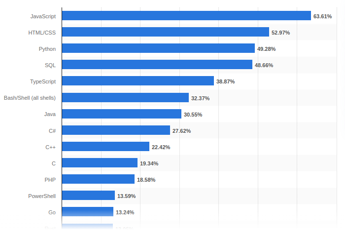
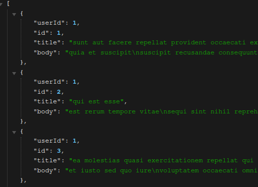
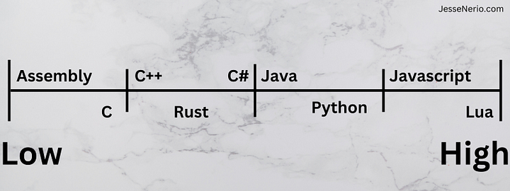
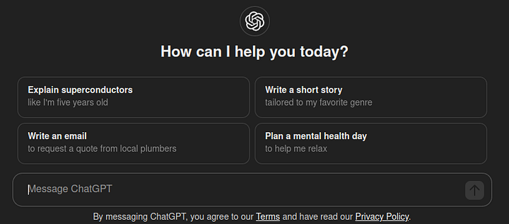
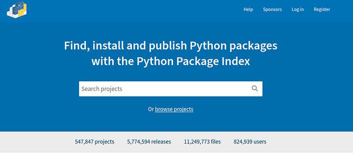

Code languages exist as an intermediary between binary manipulation and the coder. The goal of a programming language is to make manipulating the computer easier. It is a layer of abstraction from which we work at.
So that begs the question why don't we have one universal language for everything? The answer is the needs of each niche. Different language formats and features fulfill the needs of niches better or worse.
When internet browsers were new we needed some type of language to manage the client. We could have tried to re-implement the C programming language but it would not be the same. The usefulness of a custom language was better. We created Javascript.
Back in the 80s when Fortran was popular, we could have continued it rather than switch to C. But C was just a better language and Fortran was better for calculations.
In the early 2000s why did so many developers work on Python 2? Well-it was meant as an easier language to learn than C++ and Java. In 2024 why are we so focused on Rust? Its programming features seem to fit the needs of operating systems better than C.
Plain and simple. Languages exist to fulfill needs. What is wild-there are over 8,900 historical languages and over 700 in use today. Despite all these options we still have to learn 1 programming language at a time. We have to pick one niche, one language and stick to it to get any good.
Doesn't that seem unfair? That programming has become so big, yet we understand only a tiny chink of it.
Popular languages
Photo by Statistica
The more advanced a programmer we become the more languages we learn. Me myself I am proficient in Java, C++, Python & Javascript. I can pretty much do all niches from these 4 languages. From machine learning, graphics programming to web development-it is all covered by those 4 languages.
Let's overview some of these popular languages. You can just skim through to get the gist then pick up on what is and is not a language:
Most popular languages
Python: Used in general programming with a high level of abstraction. No hard types. The compiler reads from top to bottom.
- Strengths: Easy to write, lots of libraries, quick to learn.
- Weaknesses: Slower language, can be confusing to read without the hard typing. Indentations can be difficult for some people.
JavaScript: Originally a web client programming language. Future developers expanded it for server side programming. It is associated with web development. It has no typing and the compiler reads top to bottom just like Python.
- Strengths: Easy to write. Programmers tend to write up complex programs easily. Used client and server side for consistency.
- Weaknesses: Development teams update the language and libraries too much. Changes are constant every month. It is hard to read without typing. Client side and server side programming are done differently.
Typescript: A wrapper for JavaScript. It is JavaScript with Typing. WE consider this an upgrade for JavaScript. Most JavaScript code is compatible with Typescript.
- Strengths: Easier to read than JavaScript. More maintainable. Works better than Javascript in teams.
- Weaknesses: More verbose. Typing makes writing take longer.
C++: C++ is highly performant. It has decades old developer support. You can do everything in C++. Most languages are writting in C++. Developers call C++ the programming language of programming languages.
- Strengths: Performance, lots of programming features, great customer experience and lots of support online.
- Weaknesses: Steeper learning curve, manual memory management. This language can be dangerous to write in as it is closer to machine code.
Java: Developers made Java object oriented. The compiler does not run line by line but the whole project all at once. It is typically used for large projects with many developers. It is platform independent. This language has such long-standing support there is documentation everywhere for it.
- Strengths: Great developer experience. Meant for slightly more advanced developers. Equal ease in reading and writing.
- Weaknesses: Verbose, slower than C++ and faster than Python. The build tools are cumbersome.
What is and is not a language
Formats are how data is presented. They are structured in a way that is readable either by coders or software. Here are some formats:
- CSV
- XML
- JSON
- YAML
Shells are how you interact with some software line by line. This can be for a programming language like Python or an operating system. Linux and Windows command lines are great examples.
But shells can be used for any software, even databases, video games, game engines, etc. Here are some shell languages:
- Python
- Bash
- Powershell
- Bourne Shell (sh)
Photo by Linux Screenshots
Database query languages are another type of language. There are only two super popular ones one with MongoDB and the other SQL. The rest you probably never heard of.
These exist to query a database using commands...
- SQL
- MQL (MongoDB)
- Many more you probably never heard...
Markup languages exist to decorate a document or hold information for viewing. They are meant to markup a piece of information for reading. Note XML and JSON are sometimes called a markup language.
But they act more as formats so thats how I categorized them. Here are some markup languages....
- HTML
- CSS (technically not)
- Markdown
- LaTeX
Programming languages-finally we have the rest. These are what we are talking about. They exist for you to create software using logic. They are meant for general purpose and can be used to write anything.
- Python
- Java
- JavaScript
- C
- Etc.
Low vs high level languages
There is a spectrum of high to low level languages. Low level means the language has the capability to control hardware directly. High means their are frameworks or APIs in between.
Typically a language like Python uses C++ as its intermediate between Assembly and Python language. Python would be considered high level and Assembly low level...
Here we have organized the languages by how directly they access hardware and drivers. Many of the ones to the middle left have the capability of both high level and low level programming.
Rust for example can control hardware but has high level abstractions.
Each language comes with a community
Each language comes with its own online community. The size of the community is what determines how good the internet is for the language.
In the past we used a search engine to scour the internet for all the forums and threads. Now its all about language models. The community out there is one giant dataset for training models. The training is meant to teach you the language. The bigger the community, the bigger the dataset, the better the model is for teaching you.
Language models rank languages and frameworks by popularity. The more popular the more likely it is well trained. You can tell this by the number of forks and stars on a repository. The higher the forks and stars the more likely language models are trained well on it. The correlation is direct.
Also, the bigger the community the more 3rd party libraries there are. The economy of code is simply better with bigger communities.
Lastly, For some reason high level languages have bigger communities. Assembly, C, C++ and Rust doesn't seem to have the same backing as Javascript and Lua.
FAQ
How do I pick the best programming language?
Picking the best does not mean perfect. It is about knowing which language has the projects you want to join first. I chose Java because Runescape is written in Java.
A year later my second language was Python because it has Machine learning. Now, years later, I can code in Java and Python, switching between the two like nothing.
Photo by Luca Bravo
Not only can I still program in Runescape but I can write deep learning models. No problem.
Again, my 3rd language was Javascript, because I wanted to make websites for my projects. And now I can switch between Javascript, Java and Python. I can do all three of my favorite project types if I wanted.
Are low level languages better than high level languages?
Low level languages are cooler. I wouldn't say they are better. Its similar to saying "Arch btw". You get respect and you learn how programming actually works. For example using Windows doesn't really teach you operating systems. But using Linux teaches how operating systems truly work.
Photo on WikiMedia
But their are problems that come with low level languages. The problems are...
- It's slower to learn
- They are more lines of code
- Its different code per operating system
- There is usually less online help
While with high level languages its faster, less lines, same per OS and has more online help. You must choose yourself which you want to go with.
How long should I stick to one language?
I recommend you stick to one language for the first year. But after it I also recommend to continue learning new languages. Although you will have a core 2 or 3 languages you should be learning a new language every year or other year.
It is good to develop an open mind. Many software developers believe Lua, Python, C or another language are the best. They believe their language is the one and only.
That is a beginners trap. Opening yourself to other languages will make you talk more like a senior engineer.